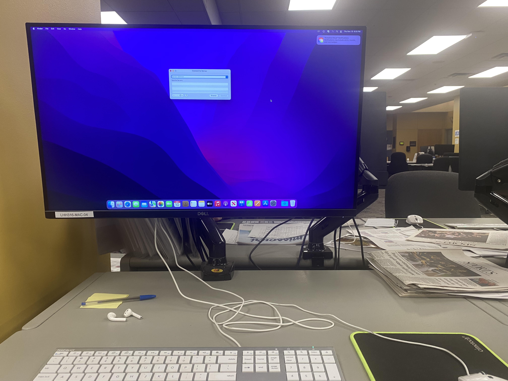
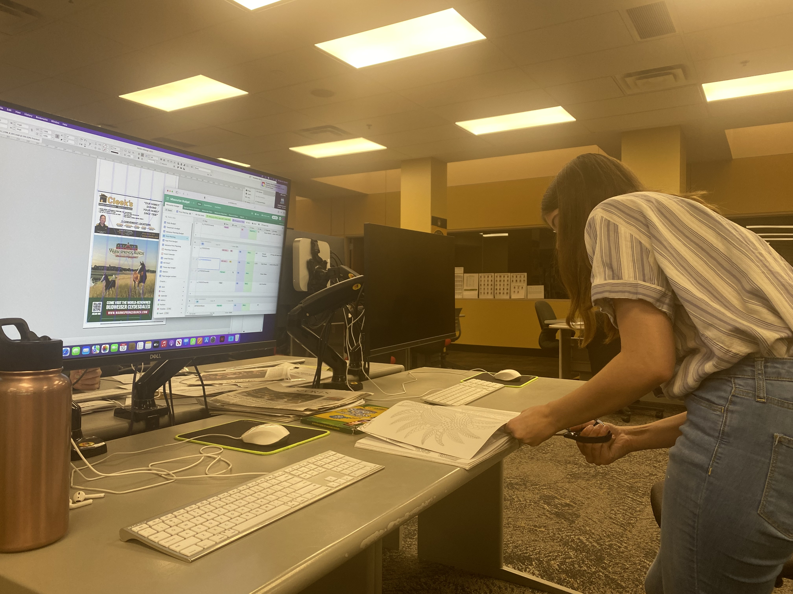
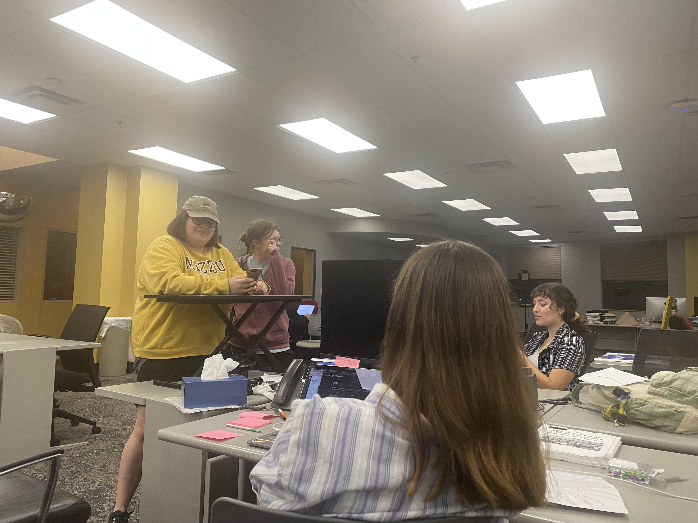
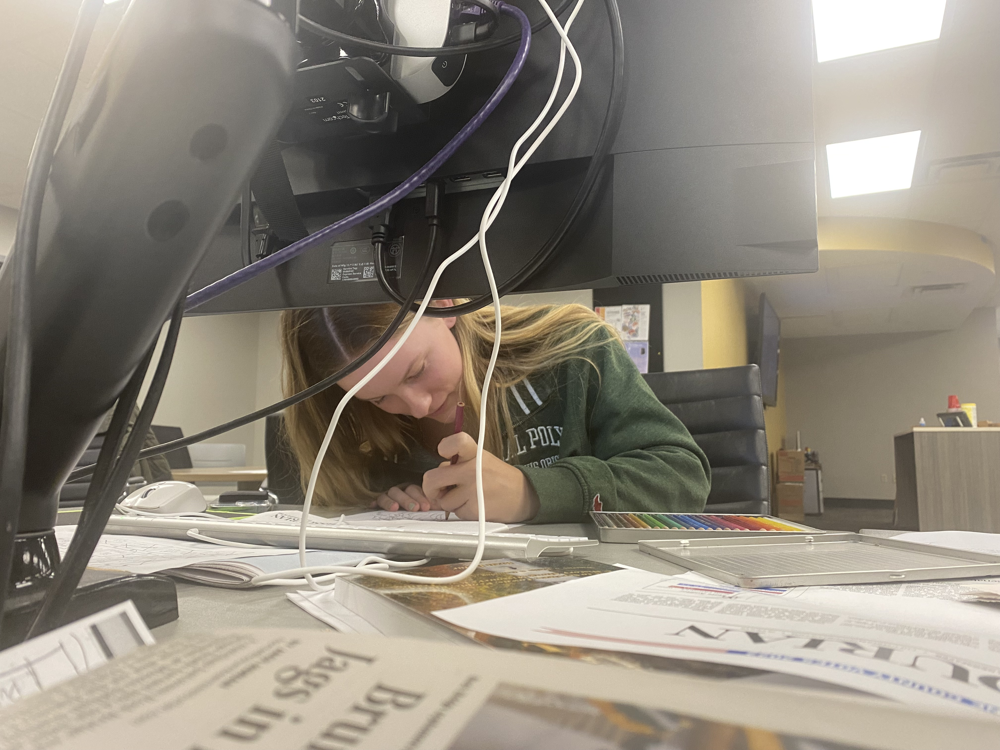
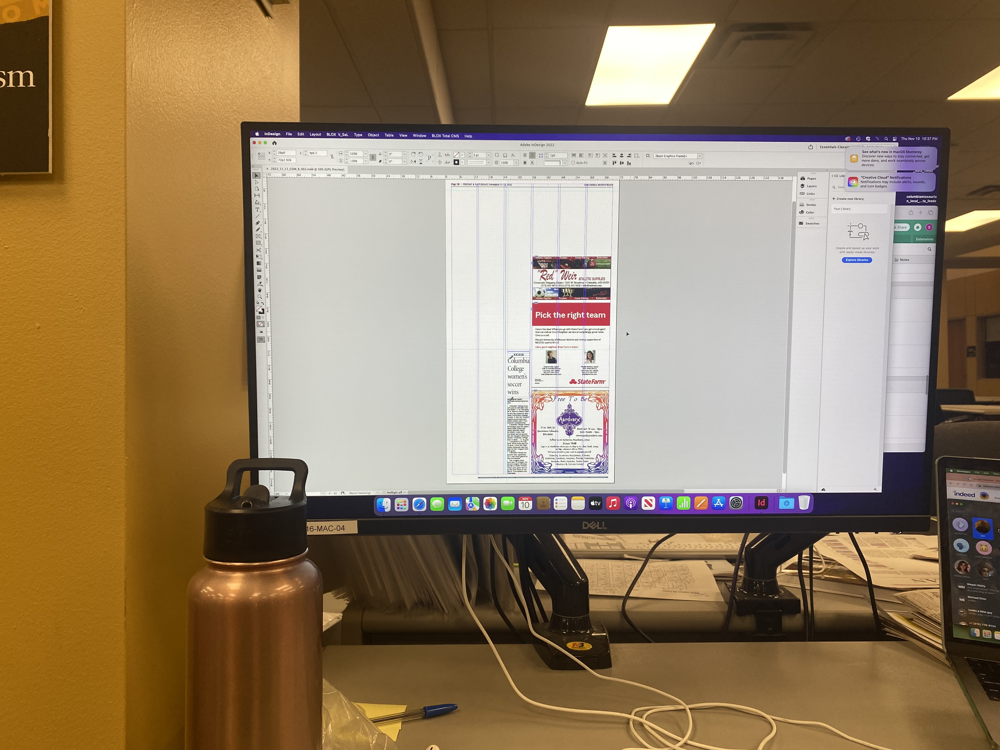
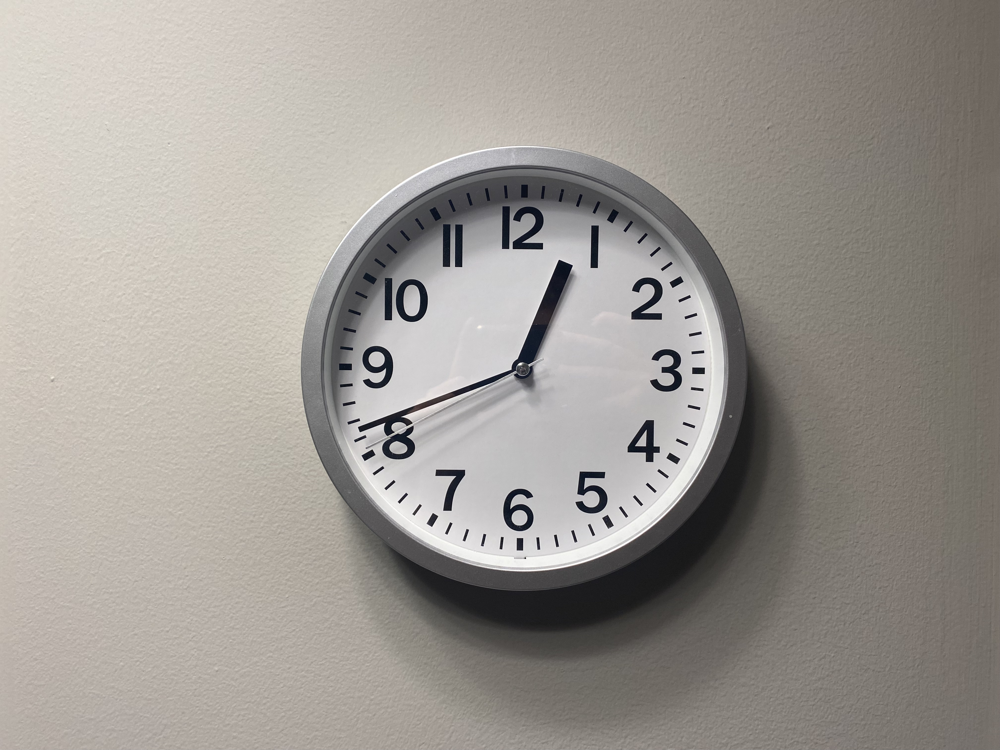

A night, in photographs, of how the Columbia Missourian operates after hours, from the eyes of a Design Teaching Assistant.

The first step of a night-side shift on the Columbia Missourian design desk is to log in and connect to the server. This makes it possible to access the page documents and content we'll place.

There's a lot of waiting when working on the design desk. To pass the time, many of us will do homework, read, chat or do arts and crafts. Assistant City Editor Mae Bruce is cutting a page out of the communal coloring book one night when waiting for an event to finish.

A group of the Thursday night Missourian employees stand around the editor desk. Oftentimes, designers, editors and photographers will meet when working on the next day's print product. This night's meeting also included some investigative journalism as the team tried to identify a missing phone.

There are usually one to two design TAs each night for the Missourian. On Thursday nights, Campbell Biemiller (pictured) works on the news desk. Here, Biemiller also colors while waiting for stories to place on the page. Designers work across from each other, and will communicate across the desk below the monitors.
A personal laptop sits in front of the design monitors at the Columbia Missourian. As the night goes on and the newsroom grows quieter, it is easier for the remaining few students to get homework done in quiet while waiting for the night to progress.

Pagess for the paper start as blank white documents. Some, like this one, come with advertisements pre-placed, but otherwise, designers are in charge of ensuring all pages are filled with content in clear, legible ways.

Missourian deadlines are commonly set at 12:30 a.m. This evening, pages were designed, edited and sent to the printers in Jefferson City on time.